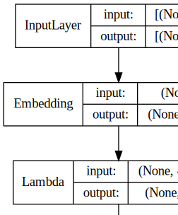
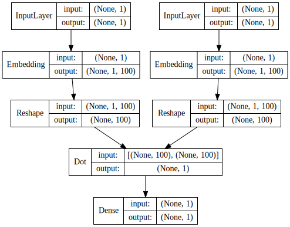

Word Embedding Using Keras¶
import pandas as pd
import numpy as np
import re
import nltk
import matplotlib.pyplot as plt
pd.options.display.max_colwidth = 200
%matplotlib inline
# Google Colab Adhoc Setting
!nvidia-smi
nltk.download(['gutenberg','punkt','stopwords'])
!pip show spacy
!pip install --upgrade spacy
#!python -m spacy download en_core_web_trf
!python -m spacy download en_core_web_lg
Mon Mar 1 00:20:09 2021
+-----------------------------------------------------------------------------+
| NVIDIA-SMI 460.39 Driver Version: 460.32.03 CUDA Version: 11.2 |
|-------------------------------+----------------------+----------------------+
| GPU Name Persistence-M| Bus-Id Disp.A | Volatile Uncorr. ECC |
| Fan Temp Perf Pwr:Usage/Cap| Memory-Usage | GPU-Util Compute M. |
| | | MIG M. |
|===============================+======================+======================|
| 0 Tesla T4 Off | 00000000:00:04.0 Off | 0 |
| N/A 64C P8 11W / 70W | 0MiB / 15109MiB | 0% Default |
| | | N/A |
+-------------------------------+----------------------+----------------------+
+-----------------------------------------------------------------------------+
| Processes: |
| GPU GI CI PID Type Process name GPU Memory |
| ID ID Usage |
|=============================================================================|
| No running processes found |
+-----------------------------------------------------------------------------+
[nltk_data] Downloading package gutenberg to /root/nltk_data...
[nltk_data] Package gutenberg is already up-to-date!
[nltk_data] Downloading package punkt to /root/nltk_data...
[nltk_data] Package punkt is already up-to-date!
[nltk_data] Downloading package stopwords to /root/nltk_data...
[nltk_data] Package stopwords is already up-to-date!
Name: spacy
Version: 3.0.3
Summary: Industrial-strength Natural Language Processing (NLP) in Python
Home-page: https://spacy.io
Author: Explosion
Author-email: contact@explosion.ai
License: MIT
Location: /usr/local/lib/python3.7/dist-packages
Requires: setuptools, cymem, importlib-metadata, typer, spacy-legacy, numpy, jinja2, srsly, typing-extensions, catalogue, blis, thinc, wasabi, pydantic, murmurhash, preshed, pathy, packaging, requests, tqdm
Required-by: fastai, en-core-web-sm
Requirement already up-to-date: spacy in /usr/local/lib/python3.7/dist-packages (3.0.3)
Requirement already satisfied, skipping upgrade: setuptools in /usr/local/lib/python3.7/dist-packages (from spacy) (53.0.0)
Requirement already satisfied, skipping upgrade: typing-extensions>=3.7.4; python_version < "3.8" in /usr/local/lib/python3.7/dist-packages (from spacy) (3.7.4.3)
Requirement already satisfied, skipping upgrade: pathy in /usr/local/lib/python3.7/dist-packages (from spacy) (0.4.0)
Requirement already satisfied, skipping upgrade: importlib-metadata>=0.20; python_version < "3.8" in /usr/local/lib/python3.7/dist-packages (from spacy) (3.7.0)
Requirement already satisfied, skipping upgrade: srsly<3.0.0,>=2.4.0 in /usr/local/lib/python3.7/dist-packages (from spacy) (2.4.0)
Requirement already satisfied, skipping upgrade: cymem<2.1.0,>=2.0.2 in /usr/local/lib/python3.7/dist-packages (from spacy) (2.0.5)
Requirement already satisfied, skipping upgrade: pydantic<1.8.0,>=1.7.1 in /usr/local/lib/python3.7/dist-packages (from spacy) (1.7.3)
Requirement already satisfied, skipping upgrade: typer<0.4.0,>=0.3.0 in /usr/local/lib/python3.7/dist-packages (from spacy) (0.3.2)
Requirement already satisfied, skipping upgrade: tqdm<5.0.0,>=4.38.0 in /usr/local/lib/python3.7/dist-packages (from spacy) (4.41.1)
Requirement already satisfied, skipping upgrade: murmurhash<1.1.0,>=0.28.0 in /usr/local/lib/python3.7/dist-packages (from spacy) (1.0.5)
Requirement already satisfied, skipping upgrade: thinc<8.1.0,>=8.0.0 in /usr/local/lib/python3.7/dist-packages (from spacy) (8.0.1)
Requirement already satisfied, skipping upgrade: catalogue<2.1.0,>=2.0.1 in /usr/local/lib/python3.7/dist-packages (from spacy) (2.0.1)
Requirement already satisfied, skipping upgrade: packaging>=20.0 in /usr/local/lib/python3.7/dist-packages (from spacy) (20.9)
Requirement already satisfied, skipping upgrade: blis<0.8.0,>=0.4.0 in /usr/local/lib/python3.7/dist-packages (from spacy) (0.4.1)
Requirement already satisfied, skipping upgrade: wasabi<1.1.0,>=0.8.1 in /usr/local/lib/python3.7/dist-packages (from spacy) (0.8.2)
Requirement already satisfied, skipping upgrade: preshed<3.1.0,>=3.0.2 in /usr/local/lib/python3.7/dist-packages (from spacy) (3.0.5)
Requirement already satisfied, skipping upgrade: spacy-legacy<3.1.0,>=3.0.0 in /usr/local/lib/python3.7/dist-packages (from spacy) (3.0.1)
Requirement already satisfied, skipping upgrade: jinja2 in /usr/local/lib/python3.7/dist-packages (from spacy) (2.11.3)
Requirement already satisfied, skipping upgrade: numpy>=1.15.0 in /usr/local/lib/python3.7/dist-packages (from spacy) (1.19.5)
Requirement already satisfied, skipping upgrade: requests<3.0.0,>=2.13.0 in /usr/local/lib/python3.7/dist-packages (from spacy) (2.23.0)
Requirement already satisfied, skipping upgrade: smart-open<4.0.0,>=2.2.0 in /usr/local/lib/python3.7/dist-packages (from pathy->spacy) (3.0.0)
Requirement already satisfied, skipping upgrade: zipp>=0.5 in /usr/local/lib/python3.7/dist-packages (from importlib-metadata>=0.20; python_version < "3.8"->spacy) (3.4.0)
Requirement already satisfied, skipping upgrade: click<7.2.0,>=7.1.1 in /usr/local/lib/python3.7/dist-packages (from typer<0.4.0,>=0.3.0->spacy) (7.1.2)
Requirement already satisfied, skipping upgrade: pyparsing>=2.0.2 in /usr/local/lib/python3.7/dist-packages (from packaging>=20.0->spacy) (2.4.7)
Requirement already satisfied, skipping upgrade: MarkupSafe>=0.23 in /usr/local/lib/python3.7/dist-packages (from jinja2->spacy) (1.1.1)
Requirement already satisfied, skipping upgrade: urllib3!=1.25.0,!=1.25.1,<1.26,>=1.21.1 in /usr/local/lib/python3.7/dist-packages (from requests<3.0.0,>=2.13.0->spacy) (1.24.3)
Requirement already satisfied, skipping upgrade: certifi>=2017.4.17 in /usr/local/lib/python3.7/dist-packages (from requests<3.0.0,>=2.13.0->spacy) (2020.12.5)
Requirement already satisfied, skipping upgrade: idna<3,>=2.5 in /usr/local/lib/python3.7/dist-packages (from requests<3.0.0,>=2.13.0->spacy) (2.10)
Requirement already satisfied, skipping upgrade: chardet<4,>=3.0.2 in /usr/local/lib/python3.7/dist-packages (from requests<3.0.0,>=2.13.0->spacy) (3.0.4)
2021-03-01 00:20:14.904018: I tensorflow/stream_executor/platform/default/dso_loader.cc:49] Successfully opened dynamic library libcudart.so.10.1
Collecting en-core-web-trf==3.0.0
?25l Downloading https://github.com/explosion/spacy-models/releases/download/en_core_web_trf-3.0.0/en_core_web_trf-3.0.0-py3-none-any.whl (459.7MB)
|████████████████████████████████| 459.7MB 37kB/s
?25hRequirement already satisfied: spacy<3.1.0,>=3.0.0 in /usr/local/lib/python3.7/dist-packages (from en-core-web-trf==3.0.0) (3.0.3)
Collecting spacy-transformers<1.1.0,>=1.0.0rc4
Downloading https://files.pythonhosted.org/packages/5b/22/51e9e59ebb0d914cf162201ca76f497a2fb1730e9fcf6cf5f5de3a2fbfc0/spacy_transformers-1.0.1-py2.py3-none-any.whl
Requirement already satisfied: typer<0.4.0,>=0.3.0 in /usr/local/lib/python3.7/dist-packages (from spacy<3.1.0,>=3.0.0->en-core-web-trf==3.0.0) (0.3.2)
Requirement already satisfied: srsly<3.0.0,>=2.4.0 in /usr/local/lib/python3.7/dist-packages (from spacy<3.1.0,>=3.0.0->en-core-web-trf==3.0.0) (2.4.0)
Requirement already satisfied: importlib-metadata>=0.20; python_version < "3.8" in /usr/local/lib/python3.7/dist-packages (from spacy<3.1.0,>=3.0.0->en-core-web-trf==3.0.0) (3.7.0)
Requirement already satisfied: pathy in /usr/local/lib/python3.7/dist-packages (from spacy<3.1.0,>=3.0.0->en-core-web-trf==3.0.0) (0.4.0)
Requirement already satisfied: preshed<3.1.0,>=3.0.2 in /usr/local/lib/python3.7/dist-packages (from spacy<3.1.0,>=3.0.0->en-core-web-trf==3.0.0) (3.0.5)
Requirement already satisfied: requests<3.0.0,>=2.13.0 in /usr/local/lib/python3.7/dist-packages (from spacy<3.1.0,>=3.0.0->en-core-web-trf==3.0.0) (2.23.0)
Requirement already satisfied: catalogue<2.1.0,>=2.0.1 in /usr/local/lib/python3.7/dist-packages (from spacy<3.1.0,>=3.0.0->en-core-web-trf==3.0.0) (2.0.1)
Requirement already satisfied: jinja2 in /usr/local/lib/python3.7/dist-packages (from spacy<3.1.0,>=3.0.0->en-core-web-trf==3.0.0) (2.11.3)
Requirement already satisfied: murmurhash<1.1.0,>=0.28.0 in /usr/local/lib/python3.7/dist-packages (from spacy<3.1.0,>=3.0.0->en-core-web-trf==3.0.0) (1.0.5)
Requirement already satisfied: typing-extensions>=3.7.4; python_version < "3.8" in /usr/local/lib/python3.7/dist-packages (from spacy<3.1.0,>=3.0.0->en-core-web-trf==3.0.0) (3.7.4.3)
Requirement already satisfied: tqdm<5.0.0,>=4.38.0 in /usr/local/lib/python3.7/dist-packages (from spacy<3.1.0,>=3.0.0->en-core-web-trf==3.0.0) (4.41.1)
Requirement already satisfied: setuptools in /usr/local/lib/python3.7/dist-packages (from spacy<3.1.0,>=3.0.0->en-core-web-trf==3.0.0) (53.0.0)
Requirement already satisfied: wasabi<1.1.0,>=0.8.1 in /usr/local/lib/python3.7/dist-packages (from spacy<3.1.0,>=3.0.0->en-core-web-trf==3.0.0) (0.8.2)
Requirement already satisfied: blis<0.8.0,>=0.4.0 in /usr/local/lib/python3.7/dist-packages (from spacy<3.1.0,>=3.0.0->en-core-web-trf==3.0.0) (0.4.1)
Requirement already satisfied: pydantic<1.8.0,>=1.7.1 in /usr/local/lib/python3.7/dist-packages (from spacy<3.1.0,>=3.0.0->en-core-web-trf==3.0.0) (1.7.3)
Requirement already satisfied: packaging>=20.0 in /usr/local/lib/python3.7/dist-packages (from spacy<3.1.0,>=3.0.0->en-core-web-trf==3.0.0) (20.9)
Requirement already satisfied: numpy>=1.15.0 in /usr/local/lib/python3.7/dist-packages (from spacy<3.1.0,>=3.0.0->en-core-web-trf==3.0.0) (1.19.5)
Requirement already satisfied: thinc<8.1.0,>=8.0.0 in /usr/local/lib/python3.7/dist-packages (from spacy<3.1.0,>=3.0.0->en-core-web-trf==3.0.0) (8.0.1)
Requirement already satisfied: spacy-legacy<3.1.0,>=3.0.0 in /usr/local/lib/python3.7/dist-packages (from spacy<3.1.0,>=3.0.0->en-core-web-trf==3.0.0) (3.0.1)
Requirement already satisfied: cymem<2.1.0,>=2.0.2 in /usr/local/lib/python3.7/dist-packages (from spacy<3.1.0,>=3.0.0->en-core-web-trf==3.0.0) (2.0.5)
Collecting torchcontrib<0.1.0,>=0.0.2
Downloading https://files.pythonhosted.org/packages/72/36/45d475035ab35353911e72a03c1c1210eba63b71e5a6917a9e78a046aa10/torchcontrib-0.0.2.tar.gz
Collecting ftfy<6.0.0,>=5.0.0
?25l Downloading https://files.pythonhosted.org/packages/04/06/e5c80e2e0f979628d47345efba51f7ba386fe95963b11c594209085f5a9b/ftfy-5.9.tar.gz (66kB)
|████████████████████████████████| 71kB 4.7MB/s
?25hCollecting spacy-alignments<1.0.0,>=0.7.2
?25l Downloading https://files.pythonhosted.org/packages/42/86/1a428af2429609f5a238e96503fc4367efda4caf2b28734903dc9eb1d92c/spacy_alignments-0.7.2-cp37-cp37m-manylinux2014_x86_64.whl (977kB)
|████████████████████████████████| 983kB 9.1MB/s
?25hRequirement already satisfied: torch>=1.5.0 in /usr/local/lib/python3.7/dist-packages (from spacy-transformers<1.1.0,>=1.0.0rc4->en-core-web-trf==3.0.0) (1.7.1+cu101)
Collecting transformers<4.3.0,>=3.1.0
?25l Downloading https://files.pythonhosted.org/packages/88/b1/41130a228dd656a1a31ba281598a968320283f48d42782845f6ba567f00b/transformers-4.2.2-py3-none-any.whl (1.8MB)
|████████████████████████████████| 1.8MB 22.3MB/s
?25hRequirement already satisfied: click<7.2.0,>=7.1.1 in /usr/local/lib/python3.7/dist-packages (from typer<0.4.0,>=0.3.0->spacy<3.1.0,>=3.0.0->en-core-web-trf==3.0.0) (7.1.2)
Requirement already satisfied: zipp>=0.5 in /usr/local/lib/python3.7/dist-packages (from importlib-metadata>=0.20; python_version < "3.8"->spacy<3.1.0,>=3.0.0->en-core-web-trf==3.0.0) (3.4.0)
Requirement already satisfied: smart-open<4.0.0,>=2.2.0 in /usr/local/lib/python3.7/dist-packages (from pathy->spacy<3.1.0,>=3.0.0->en-core-web-trf==3.0.0) (3.0.0)
Requirement already satisfied: urllib3!=1.25.0,!=1.25.1,<1.26,>=1.21.1 in /usr/local/lib/python3.7/dist-packages (from requests<3.0.0,>=2.13.0->spacy<3.1.0,>=3.0.0->en-core-web-trf==3.0.0) (1.24.3)
Requirement already satisfied: idna<3,>=2.5 in /usr/local/lib/python3.7/dist-packages (from requests<3.0.0,>=2.13.0->spacy<3.1.0,>=3.0.0->en-core-web-trf==3.0.0) (2.10)
Requirement already satisfied: chardet<4,>=3.0.2 in /usr/local/lib/python3.7/dist-packages (from requests<3.0.0,>=2.13.0->spacy<3.1.0,>=3.0.0->en-core-web-trf==3.0.0) (3.0.4)
Requirement already satisfied: certifi>=2017.4.17 in /usr/local/lib/python3.7/dist-packages (from requests<3.0.0,>=2.13.0->spacy<3.1.0,>=3.0.0->en-core-web-trf==3.0.0) (2020.12.5)
Requirement already satisfied: MarkupSafe>=0.23 in /usr/local/lib/python3.7/dist-packages (from jinja2->spacy<3.1.0,>=3.0.0->en-core-web-trf==3.0.0) (1.1.1)
Requirement already satisfied: pyparsing>=2.0.2 in /usr/local/lib/python3.7/dist-packages (from packaging>=20.0->spacy<3.1.0,>=3.0.0->en-core-web-trf==3.0.0) (2.4.7)
Requirement already satisfied: wcwidth in /usr/local/lib/python3.7/dist-packages (from ftfy<6.0.0,>=5.0.0->spacy-transformers<1.1.0,>=1.0.0rc4->en-core-web-trf==3.0.0) (0.2.5)
Requirement already satisfied: filelock in /usr/local/lib/python3.7/dist-packages (from transformers<4.3.0,>=3.1.0->spacy-transformers<1.1.0,>=1.0.0rc4->en-core-web-trf==3.0.0) (3.0.12)
Requirement already satisfied: regex!=2019.12.17 in /usr/local/lib/python3.7/dist-packages (from transformers<4.3.0,>=3.1.0->spacy-transformers<1.1.0,>=1.0.0rc4->en-core-web-trf==3.0.0) (2019.12.20)
Collecting sacremoses
?25l Downloading https://files.pythonhosted.org/packages/7d/34/09d19aff26edcc8eb2a01bed8e98f13a1537005d31e95233fd48216eed10/sacremoses-0.0.43.tar.gz (883kB)
|████████████████████████████████| 890kB 46.7MB/s
?25hCollecting tokenizers==0.9.4
?25l Downloading https://files.pythonhosted.org/packages/fb/36/59e4a62254c5fcb43894c6b0e9403ec6f4238cc2422a003ed2e6279a1784/tokenizers-0.9.4-cp37-cp37m-manylinux2010_x86_64.whl (2.9MB)
|████████████████████████████████| 2.9MB 54.3MB/s
?25hRequirement already satisfied: six in /usr/local/lib/python3.7/dist-packages (from sacremoses->transformers<4.3.0,>=3.1.0->spacy-transformers<1.1.0,>=1.0.0rc4->en-core-web-trf==3.0.0) (1.15.0)
Requirement already satisfied: joblib in /usr/local/lib/python3.7/dist-packages (from sacremoses->transformers<4.3.0,>=3.1.0->spacy-transformers<1.1.0,>=1.0.0rc4->en-core-web-trf==3.0.0) (1.0.1)
Building wheels for collected packages: torchcontrib, ftfy, sacremoses
Building wheel for torchcontrib (setup.py) ... ?25l?25hdone
Created wheel for torchcontrib: filename=torchcontrib-0.0.2-cp37-none-any.whl size=7532 sha256=27362f2689663edd2d79d441f00d8241eb6f01937d4180b2a6409cbac41ce59f
Stored in directory: /root/.cache/pip/wheels/06/06/7b/a5f5920bbf4f12a2c927e438fac17d4cd9560f8336b00e9a99
Building wheel for ftfy (setup.py) ... ?25l?25hdone
Created wheel for ftfy: filename=ftfy-5.9-cp37-none-any.whl size=46451 sha256=9f9e879b9fbf7cc232e9287af5a94fb60a95f7d0a0d1764701ceeeb0a6dcaa34
Stored in directory: /root/.cache/pip/wheels/5e/2e/f0/b07196e8c929114998f0316894a61c752b63bfa3fdd50d2fc3
Building wheel for sacremoses (setup.py) ... ?25l?25hdone
Created wheel for sacremoses: filename=sacremoses-0.0.43-cp37-none-any.whl size=893262 sha256=e2a97c010425bf0272a68e954d3655eb5e4cad4a96c9425aeb105114994915ac
Stored in directory: /root/.cache/pip/wheels/29/3c/fd/7ce5c3f0666dab31a50123635e6fb5e19ceb42ce38d4e58f45
Successfully built torchcontrib ftfy sacremoses
Installing collected packages: torchcontrib, ftfy, spacy-alignments, sacremoses, tokenizers, transformers, spacy-transformers, en-core-web-trf
Successfully installed en-core-web-trf-3.0.0 ftfy-5.9 sacremoses-0.0.43 spacy-alignments-0.7.2 spacy-transformers-1.0.1 tokenizers-0.9.4 torchcontrib-0.0.2 transformers-4.2.2
✔ Download and installation successful
You can now load the package via spacy.load('en_core_web_trf')
Sample corpus of text documents¶
corpus = ['The sky is blue and beautiful.',
'Love this blue and beautiful sky!',
'The quick brown fox jumps over the lazy dog.',
"A king's breakfast has sausages, ham, bacon, eggs, toast and beans",
'I love green eggs, ham, sausages and bacon!',
'The brown fox is quick and the blue dog is lazy!',
'The sky is very blue and the sky is very beautiful today',
'The dog is lazy but the brown fox is quick!'
]
labels = ['weather', 'weather', 'animals', 'food', 'food', 'animals', 'weather', 'animals']
corpus = np.array(corpus)
corpus_df = pd.DataFrame({'Document': corpus,
'Category': labels})
corpus_df = corpus_df[['Document', 'Category']]
corpus_df
| Document | Category | |
|---|---|---|
| 0 | The sky is blue and beautiful. | weather |
| 1 | Love this blue and beautiful sky! | weather |
| 2 | The quick brown fox jumps over the lazy dog. | animals |
| 3 | A king's breakfast has sausages, ham, bacon, eggs, toast and beans | food |
| 4 | I love green eggs, ham, sausages and bacon! | food |
| 5 | The brown fox is quick and the blue dog is lazy! | animals |
| 6 | The sky is very blue and the sky is very beautiful today | weather |
| 7 | The dog is lazy but the brown fox is quick! | animals |
Simple text pre-processing¶
wpt = nltk.WordPunctTokenizer()
stop_words = nltk.corpus.stopwords.words('english')
def normalize_document(doc):
# lower case and remove special characters\whitespaces
doc = re.sub(r'[^a-zA-Z\s]', '', doc, re.I|re.A)
doc = doc.lower()
doc = doc.strip()
# tokenize document
tokens = wpt.tokenize(doc)
# filter stopwords out of document
filtered_tokens = [token for token in tokens if token not in stop_words]
# re-create document from filtered tokens
doc = ' '.join(filtered_tokens)
return doc
normalize_corpus = np.vectorize(normalize_document)
norm_corpus = normalize_corpus(corpus)
norm_corpus
array(['sky blue beautiful', 'love blue beautiful sky',
'quick brown fox jumps lazy dog',
'kings breakfast sausages ham bacon eggs toast beans',
'love green eggs ham sausages bacon',
'brown fox quick blue dog lazy', 'sky blue sky beautiful today',
'dog lazy brown fox quick'], dtype='<U51')
Load up sample corpus - Bible¶
from nltk.corpus import gutenberg
from string import punctuation
bible = gutenberg.sents('bible-kjv.txt')
remove_terms = punctuation + '0123456789'
norm_bible = [[word.lower() for word in sent if word not in remove_terms] for sent in bible]
norm_bible = [' '.join(tok_sent) for tok_sent in norm_bible]
norm_bible = filter(None, normalize_corpus(norm_bible))
norm_bible = [tok_sent for tok_sent in norm_bible if len(tok_sent.split()) > 2]
print('Total lines:', len(bible))
print('\nSample line:', bible[10])
print('\nProcessed line:', norm_bible[10])
Total lines: 30103
Sample line: ['1', ':', '6', 'And', 'God', 'said', ',', 'Let', 'there', 'be', 'a', 'firmament', 'in', 'the', 'midst', 'of', 'the', 'waters', ',', 'and', 'let', 'it', 'divide', 'the', 'waters', 'from', 'the', 'waters', '.']
Processed line: god said let firmament midst waters let divide waters waters
Implementing a word2vec model using a CBOW (Continuous Bag of Words) neural network architecture¶
Build Vocabulary¶
from keras.preprocessing import text
from keras.utils import np_utils
from keras.preprocessing import sequence
tokenizer = text.Tokenizer()
tokenizer.fit_on_texts(norm_bible)
word2id = tokenizer.word_index
word2id['PAD'] = 0
id2word = {v:k for k, v in word2id.items()}
wids = [[word2id[w] for w in text.text_to_word_sequence(doc)] for doc in norm_bible]
vocab_size = len(word2id)
embed_size = 100
window_size = 2
print('Vocabulary Size:', vocab_size)
print('Vocabulary Sample:', list(word2id.items())[:10])
Vocabulary Size: 12425
Vocabulary Sample: [('shall', 1), ('unto', 2), ('lord', 3), ('thou', 4), ('thy', 5), ('god', 6), ('ye', 7), ('said', 8), ('thee', 9), ('upon', 10)]
Build (context_words, target_word) pair generator¶
def generate_context_word_pairs(corpus, window_size, vocab_size):
context_length = window_size*2
for words in corpus:
sentence_length = len(words)
for index, word in enumerate(words):
context_words = []
label_word = []
start = index - window_size
end = index + window_size + 1
context_words.append([words[i]
for i in range(start, end)
if 0 <= i < sentence_length
and i != index])
label_word.append(word)
x = sequence.pad_sequences(context_words, maxlen=context_length)
y = np_utils.to_categorical(label_word, vocab_size)
yield (x, y)
i = 0
for x, y in generate_context_word_pairs(corpus=wids, window_size=window_size, vocab_size=vocab_size):
if 0 not in x[0]:
print('Context (X):', [id2word[w] for w in x[0]], '-> Target (Y):', id2word[np.argwhere(y[0])[0][0]])
if i == 10:
break
i += 1
Context (X): ['old', 'testament', 'james', 'bible'] -> Target (Y): king
Context (X): ['first', 'book', 'called', 'genesis'] -> Target (Y): moses
Context (X): ['beginning', 'god', 'heaven', 'earth'] -> Target (Y): created
Context (X): ['earth', 'without', 'void', 'darkness'] -> Target (Y): form
Context (X): ['without', 'form', 'darkness', 'upon'] -> Target (Y): void
Context (X): ['form', 'void', 'upon', 'face'] -> Target (Y): darkness
Context (X): ['void', 'darkness', 'face', 'deep'] -> Target (Y): upon
Context (X): ['spirit', 'god', 'upon', 'face'] -> Target (Y): moved
Context (X): ['god', 'moved', 'face', 'waters'] -> Target (Y): upon
Context (X): ['god', 'said', 'light', 'light'] -> Target (Y): let
Context (X): ['god', 'saw', 'good', 'god'] -> Target (Y): light
Build CBOW Deep Network Model¶
import keras.backend as K
from keras.models import Sequential
from keras.layers import Dense, Embedding, Lambda
cbow = Sequential()
cbow.add(Embedding(input_dim=vocab_size, output_dim=embed_size, input_length=window_size*2))
cbow.add(Lambda(lambda x: K.mean(x, axis=1), output_shape=(embed_size,)))
cbow.add(Dense(vocab_size, activation='softmax'))
cbow.compile(loss='categorical_crossentropy', optimizer='rmsprop')
print(cbow.summary())
Model: "sequential"
_________________________________________________________________
Layer (type) Output Shape Param #
=================================================================
embedding (Embedding) (None, 4, 100) 1242500
_________________________________________________________________
lambda (Lambda) (None, 100) 0
_________________________________________________________________
dense (Dense) (None, 12425) 1254925
=================================================================
Total params: 2,497,425
Trainable params: 2,497,425
Non-trainable params: 0
_________________________________________________________________
None
from IPython.display import SVG
from keras.utils.vis_utils import model_to_dot
SVG(model_to_dot(cbow, show_shapes=True, show_layer_names=False,
rankdir='TB').create(prog='dot', format='svg'))

Train model for 5 epochs¶
for epoch in range(1, 6):
loss = 0.
i = 0
for x, y in generate_context_word_pairs(corpus=wids, window_size=window_size, vocab_size=vocab_size):
i += 1
loss += cbow.train_on_batch(x, y)
if i % 100000 == 0:
print('Processed {} (context, word) pairs'.format(i))
print('Epoch:', epoch, '\tLoss:', loss)
print()
Processed 100000 (context, word) pairs
Processed 200000 (context, word) pairs
Processed 300000 (context, word) pairs
Exception ignored in: <function IteratorResourceDeleter.__del__ at 0x7f0e80e0db00>
Traceback (most recent call last):
File "/usr/local/lib/python3.7/dist-packages/tensorflow/python/data/ops/iterator_ops.py", line 535, in __del__
handle=self._handle, deleter=self._deleter)
File "/usr/local/lib/python3.7/dist-packages/tensorflow/python/ops/gen_dataset_ops.py", line 1264, in delete_iterator
_ctx, "DeleteIterator", name, handle, deleter)
KeyboardInterrupt:
---------------------------------------------------------------------------
KeyboardInterrupt Traceback (most recent call last)
<ipython-input-23-39ae50d217af> in <module>()
4 for x, y in generate_context_word_pairs(corpus=wids, window_size=window_size, vocab_size=vocab_size):
5 i += 1
----> 6 loss += cbow.train_on_batch(x, y)
7 if i % 100000 == 0:
8 print('Processed {} (context, word) pairs'.format(i))
/usr/local/lib/python3.7/dist-packages/tensorflow/python/keras/engine/training.py in train_on_batch(self, x, y, sample_weight, class_weight, reset_metrics, return_dict)
1725 class_weight)
1726 self.train_function = self.make_train_function()
-> 1727 logs = self.train_function(iterator)
1728
1729 if reset_metrics:
/usr/local/lib/python3.7/dist-packages/tensorflow/python/eager/def_function.py in __call__(self, *args, **kwds)
826 tracing_count = self.experimental_get_tracing_count()
827 with trace.Trace(self._name) as tm:
--> 828 result = self._call(*args, **kwds)
829 compiler = "xla" if self._experimental_compile else "nonXla"
830 new_tracing_count = self.experimental_get_tracing_count()
/usr/local/lib/python3.7/dist-packages/tensorflow/python/eager/def_function.py in _call(self, *args, **kwds)
853 # In this case we have created variables on the first call, so we run the
854 # defunned version which is guaranteed to never create variables.
--> 855 return self._stateless_fn(*args, **kwds) # pylint: disable=not-callable
856 elif self._stateful_fn is not None:
857 # Release the lock early so that multiple threads can perform the call
/usr/local/lib/python3.7/dist-packages/tensorflow/python/eager/function.py in __call__(self, *args, **kwargs)
2941 filtered_flat_args) = self._maybe_define_function(args, kwargs)
2942 return graph_function._call_flat(
-> 2943 filtered_flat_args, captured_inputs=graph_function.captured_inputs) # pylint: disable=protected-access
2944
2945 @property
/usr/local/lib/python3.7/dist-packages/tensorflow/python/eager/function.py in _call_flat(self, args, captured_inputs, cancellation_manager)
1917 # No tape is watching; skip to running the function.
1918 return self._build_call_outputs(self._inference_function.call(
-> 1919 ctx, args, cancellation_manager=cancellation_manager))
1920 forward_backward = self._select_forward_and_backward_functions(
1921 args,
/usr/local/lib/python3.7/dist-packages/tensorflow/python/eager/function.py in call(self, ctx, args, cancellation_manager)
558 inputs=args,
559 attrs=attrs,
--> 560 ctx=ctx)
561 else:
562 outputs = execute.execute_with_cancellation(
/usr/local/lib/python3.7/dist-packages/tensorflow/python/eager/execute.py in quick_execute(op_name, num_outputs, inputs, attrs, ctx, name)
58 ctx.ensure_initialized()
59 tensors = pywrap_tfe.TFE_Py_Execute(ctx._handle, device_name, op_name,
---> 60 inputs, attrs, num_outputs)
61 except core._NotOkStatusException as e:
62 if name is not None:
KeyboardInterrupt:
Get word embeddings¶
weights = cbow.get_weights()[0]
weights = weights[1:]
print(weights.shape)
pd.DataFrame(weights, index=list(id2word.values())[1:]).head()
(12424, 100)
| 0 | 1 | 2 | 3 | 4 | 5 | 6 | 7 | 8 | 9 | ... | 90 | 91 | 92 | 93 | 94 | 95 | 96 | 97 | 98 | 99 | |
|---|---|---|---|---|---|---|---|---|---|---|---|---|---|---|---|---|---|---|---|---|---|
| shall | -1.183386 | -2.866214 | 1.046431 | 0.943265 | -1.021784 | -0.047069 | 2.108584 | -0.458692 | -1.698881 | 0.905800 | ... | 0.655786 | 0.703828 | 0.821803 | -0.093732 | -2.474536 | 2.309505 | 0.713962 | -0.175176 | 0.262700 | 0.818652 |
| unto | -1.725262 | -1.765972 | 1.411971 | 0.917713 | 0.793832 | 0.310631 | 1.541964 | -0.082523 | -1.346811 | 0.095824 | ... | 1.682762 | -0.872293 | 1.908597 | 0.977152 | -0.835005 | 1.128618 | 0.834068 | 1.852117 | -2.522386 | -0.053387 |
| lord | 1.694633 | -0.650949 | -0.095796 | 0.950002 | 0.813837 | 1.538206 | 1.125482 | -1.655581 | -1.352673 | 0.409504 | ... | 1.553925 | -0.819261 | 1.086127 | -1.545129 | -0.035251 | 1.895598 | 2.378903 | -1.632835 | 1.375105 | 0.599096 |
| thou | -1.590623 | -0.801968 | 1.659041 | 1.314925 | -0.455822 | 1.733872 | -0.233771 | -0.638922 | 0.104744 | 0.490223 | ... | 0.652781 | -0.362778 | -0.190355 | 0.040719 | -1.988184 | 2.330042 | 1.441790 | -1.771272 | -1.738142 | -3.210077 |
| thy | 0.386488 | -0.834605 | 0.585985 | 0.801969 | -0.165132 | 0.999917 | 1.224088 | -0.317555 | -0.671106 | -1.073181 | ... | 1.267184 | -0.564660 | 0.089618 | -0.979835 | -0.215604 | 2.189568 | 0.529003 | -1.682130 | -0.632460 | 0.578122 |
5 rows × 100 columns
Build a distance matrix to view the most similar words (contextually)¶
from sklearn.metrics.pairwise import euclidean_distances
# compute pairwise distance matrix
distance_matrix = euclidean_distances(weights)
print(distance_matrix.shape)
# view contextually similar words
similar_words = {search_term: [id2word[idx] for idx in distance_matrix[word2id[search_term]-1].argsort()[1:6]+1]
for search_term in ['god', 'jesus', 'noah', 'egypt', 'john', 'gospel', 'moses','famine']}
similar_words
(12424, 12424)
{'egypt': ['destroy', 'none', 'whole', 'jacob', 'sea'],
'famine': ['wickedness', 'sore', 'countries', 'cease', 'portion'],
'god': ['therefore', 'heard', 'may', 'behold', 'heaven'],
'gospel': ['church', 'fowls', 'churches', 'preached', 'doctrine'],
'jesus': ['law', 'heard', 'world', 'many', 'dead'],
'john': ['dream', 'bones', 'held', 'present', 'alive'],
'moses': ['pharaoh', 'gate', 'jews', 'departed', 'lifted'],
'noah': ['abram', 'plagues', 'hananiah', 'korah', 'sarah']}
Implementing a word2vec model using a skip-gram neural network architecture¶
Build Vocabulary¶
from keras.preprocessing import text
tokenizer = text.Tokenizer()
tokenizer.fit_on_texts(norm_bible)
word2id = tokenizer.word_index
id2word = {v:k for k, v in word2id.items()}
vocab_size = len(word2id) + 1
embed_size = 100
wids = [[word2id[w] for w in text.text_to_word_sequence(doc)] for doc in norm_bible]
print('Vocabulary Size:', vocab_size)
print('Vocabulary Sample:', list(word2id.items())[:10])
Vocabulary Size: 12425
Vocabulary Sample: [('base', 2338), ('feller', 10771), ('sanctuary', 455), ('plunge', 10322), ('azariah', 1120), ('enlightened', 4438), ('horns', 838), ('kareah', 2920), ('nursing', 5943), ('baken', 3492)]
Build and View sample skip grams ((word1, word2) -> relevancy)¶
from keras.preprocessing.sequence import skipgrams
# generate skip-grams
skip_grams = [skipgrams(wid, vocabulary_size=vocab_size, window_size=10) for wid in wids]
# view sample skip-grams
pairs, labels = skip_grams[0][0], skip_grams[0][1]
for i in range(10):
print("({:s} ({:d}), {:s} ({:d})) -> {:d}".format(
id2word[pairs[i][0]], pairs[i][0],
id2word[pairs[i][1]], pairs[i][1],
labels[i]))
(bible (5766), stank (5220)) -> 0
(james (1154), izri (9970)) -> 0
(king (13), bad (2285)) -> 0
(king (13), james (1154)) -> 1
(king (13), lucius (8272)) -> 0
(james (1154), king (13)) -> 1
(james (1154), bazluth (10091)) -> 0
(james (1154), bible (5766)) -> 1
(king (13), bible (5766)) -> 1
(bible (5766), james (1154)) -> 1
Build Skip-gram Deep Network Model¶
from keras.layers import Dot
from keras.layers.core import Dense, Reshape
from keras.layers.embeddings import Embedding
from keras.models import Sequential
from keras.models import Model
word_model = Sequential()
word_model.add(Embedding(vocab_size, embed_size,
embeddings_initializer="glorot_uniform",
input_length=1))
word_model.add(Reshape((embed_size, )))
context_model = Sequential()
context_model.add(Embedding(vocab_size, embed_size,
embeddings_initializer="glorot_uniform",
input_length=1))
context_model.add(Reshape((embed_size,)))
model_arch = Dot(axes=1)([word_model.output, context_model.output])
model_arch = Dense(1, kernel_initializer="glorot_uniform", activation="sigmoid")(model_arch)
model = Model([word_model.input,context_model.input], model_arch)
#model.add(Merge([word_model, context_model], mode="dot"))
#model.add(Dense(1, kernel_initializer="glorot_uniform", activation="sigmoid"))
model.compile(loss="mean_squared_error", optimizer="rmsprop")
print(model.summary())
____________________________________________________________________________________________________
Layer (type) Output Shape Param # Connected to
====================================================================================================
embedding_12_input (InputLayer) (None, 1) 0
____________________________________________________________________________________________________
embedding_13_input (InputLayer) (None, 1) 0
____________________________________________________________________________________________________
embedding_12 (Embedding) (None, 1, 100) 1242500 embedding_12_input[0][0]
____________________________________________________________________________________________________
embedding_13 (Embedding) (None, 1, 100) 1242500 embedding_13_input[0][0]
____________________________________________________________________________________________________
reshape_11 (Reshape) (None, 100) 0 embedding_12[0][0]
____________________________________________________________________________________________________
reshape_12 (Reshape) (None, 100) 0 embedding_13[0][0]
____________________________________________________________________________________________________
dot_4 (Dot) (None, 1) 0 reshape_11[0][0]
reshape_12[0][0]
____________________________________________________________________________________________________
dense_5 (Dense) (None, 1) 2 dot_4[0][0]
====================================================================================================
Total params: 2,485,002
Trainable params: 2,485,002
Non-trainable params: 0
____________________________________________________________________________________________________
None
from IPython.display import SVG
from keras.utils.vis_utils import model_to_dot
SVG(model_to_dot(model, show_shapes=True, show_layer_names=False,
rankdir='TB').create(prog='dot', format='svg'))

Train the model for 5 epochs¶
for epoch in range(1, 6):
loss = 0
for i, elem in enumerate(skip_grams):
pair_first_elem = np.array(list(zip(*elem[0]))[0], dtype='int32')
pair_second_elem = np.array(list(zip(*elem[0]))[1], dtype='int32')
labels = np.array(elem[1], dtype='int32')
X = [pair_first_elem, pair_second_elem]
Y = labels
if i % 10000 == 0:
print('Processed {} (skip_first, skip_second, relevance) pairs'.format(i))
loss += model.train_on_batch(X,Y)
print('Epoch:', epoch, 'Loss:', loss)
Processed 0 (skip_first, skip_second, relevance) pairs
Processed 10000 (skip_first, skip_second, relevance) pairs
Processed 20000 (skip_first, skip_second, relevance) pairs
Epoch: 1 Loss: 4474.41281086
Processed 0 (skip_first, skip_second, relevance) pairs
Processed 10000 (skip_first, skip_second, relevance) pairs
Processed 20000 (skip_first, skip_second, relevance) pairs
Epoch: 2 Loss: 3735.81375903
Processed 0 (skip_first, skip_second, relevance) pairs
Processed 10000 (skip_first, skip_second, relevance) pairs
Processed 20000 (skip_first, skip_second, relevance) pairs
Epoch: 3 Loss: 3759.779281
Processed 0 (skip_first, skip_second, relevance) pairs
Processed 10000 (skip_first, skip_second, relevance) pairs
Processed 20000 (skip_first, skip_second, relevance) pairs
Epoch: 4 Loss: 3793.27816557
Processed 0 (skip_first, skip_second, relevance) pairs
Processed 10000 (skip_first, skip_second, relevance) pairs
Processed 20000 (skip_first, skip_second, relevance) pairs
Epoch: 5 Loss: 3718.15081862
Get word embeddings¶
word_embed_layer = model.layers[2]
weights = word_embed_layer.get_weights()[0][1:]
print(weights.shape)
pd.DataFrame(weights, index=id2word.values()).head()
(12424, 100)
| 0 | 1 | 2 | 3 | 4 | 5 | 6 | 7 | 8 | 9 | ... | 90 | 91 | 92 | 93 | 94 | 95 | 96 | 97 | 98 | 99 | |
|---|---|---|---|---|---|---|---|---|---|---|---|---|---|---|---|---|---|---|---|---|---|
| shall | 0.043252 | 0.030233 | -0.016057 | -0.071856 | 0.005915 | 0.053170 | 0.013578 | 0.000201 | 0.037018 | -0.151811 | ... | 0.289811 | 0.014798 | -0.022350 | 0.059966 | 0.107588 | -0.006052 | -0.112083 | 0.064291 | 0.110624 | -0.033265 |
| unto | -0.072916 | -0.014941 | 0.018243 | -0.206662 | -0.018253 | 0.071634 | 0.094720 | 0.008018 | -0.003973 | -0.076268 | ... | 0.044276 | 0.097791 | -0.120094 | 0.057171 | 0.239757 | 0.063303 | 0.018524 | 0.203282 | 0.093460 | -0.110360 |
| lord | -0.024338 | 0.066582 | -0.057416 | -0.112375 | 0.034131 | 0.103507 | -0.000733 | 0.071466 | 0.015607 | -0.119505 | ... | 0.115495 | -0.027881 | -0.215636 | -0.028494 | 0.097059 | 0.050633 | -0.234569 | 0.106756 | -0.014540 | 0.028276 |
| thou | 0.084224 | 0.048217 | 0.008529 | 0.025198 | 0.019296 | -0.005508 | 0.041746 | -0.012590 | -0.299545 | -0.030134 | ... | 0.079110 | -0.037630 | -0.016609 | 0.032280 | 0.055897 | 0.180336 | -0.218525 | 0.078187 | 0.077540 | -0.039218 |
| thy | 0.040458 | 0.054175 | -0.033665 | -0.031059 | 0.053622 | 0.157648 | -0.009812 | 0.032927 | -0.229837 | 0.002110 | ... | -0.033932 | -0.079629 | -0.070454 | 0.051992 | 0.029190 | -0.023169 | -0.259643 | -0.016068 | 0.122141 | -0.088576 |
5 rows × 100 columns
Build a distance matrix to view the most similar words (contextually)¶
from sklearn.metrics.pairwise import euclidean_distances
distance_matrix = euclidean_distances(weights)
print(distance_matrix.shape)
similar_words = {search_term: [id2word[idx] for idx in distance_matrix[word2id[search_term]-1].argsort()[1:6]+1]
for search_term in ['god', 'jesus', 'noah', 'egypt', 'john', 'gospel', 'moses','famine']}
similar_words
(12424, 12424)
{'egypt': ['taken', 'pharaoh', 'wilderness', 'gods', 'became'],
'famine': ['moved', 'awake', 'driven', 'howl', 'snare'],
'god': ['strength', 'given', 'blessed', 'wherefore', 'lord'],
'gospel': ['preached', 'must', 'preach', 'desire', 'grace'],
'jesus': ['disciples', 'christ', 'dead', 'peter', 'jews'],
'john': ['peter', 'hold', 'mountain', 'ghost', 'preached'],
'moses': ['commanded', 'third', 'congregation', 'tabernacle', 'tribes'],
'noah': ['ham', 'terah', 'amon', 'adin', 'zelophehad']}
Visualize word embeddings¶
from sklearn.manifold import TSNE
words = sum([[k] + v for k, v in similar_words.items()], [])
words_ids = [word2id[w] for w in words]
word_vectors = np.array([weights[idx] for idx in words_ids])
print('Total words:', len(words), '\tWord Embedding shapes:', word_vectors.shape)
tsne = TSNE(n_components=2, random_state=0, n_iter=10000, perplexity=3)
np.set_printoptions(suppress=True)
T = tsne.fit_transform(word_vectors)
labels = words
plt.figure(figsize=(14, 8))
plt.scatter(T[:, 0], T[:, 1], c='steelblue', edgecolors='k')
for label, x, y in zip(labels, T[:, 0], T[:, 1]):
plt.annotate(label, xy=(x+1, y+1), xytext=(0, 0), textcoords='offset points')
Total words: 48 Word Embedding shapes: (48, 100)
References¶
Sarkar (2020) Ch 4 Feature Engineering for Text Representation